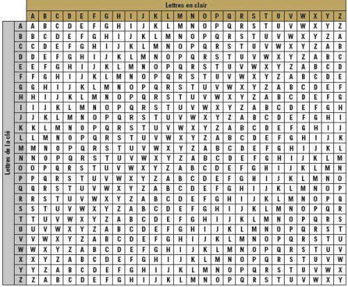

Le Chiffre de Vigenere, c'est quoi ?
Le Chiffre de Vigenère, ou code de Vigenère est un algorithme de chiffrement, inventé par Blaise de Vigenère au cours du XIXè siècle. Ce système de chiffrement utilise le chiffrement par substitution, et il est polyalphabétique, c'est à dire qu'il peut être utilisé dans plusieurs alphabets. Le principe est assez simple, mais complexe à mettre en oeuvre.
Pour fonctionner, ce chiffrement à besoin d'une clé, une dite de chiffrement,qui , contrairement à la plupart du temps, est ici sous la forme d'un mot. Ensuite, chaque caractère de la chaîne de caractère à chiffrer sera remplacé par les caractère de notre clé, à la suite. Par exemple, si on chiffre la phrase : BONJOUR JE SUIS DEVELOPPEUR WEB avec le mot MUSIQUE :
BONJOUR JE SUIS DEVELOPPEUR WEB
vvvvvvv vv vvvv vvvvvvvvvvv vvv
MUSIQUE MU SIQU EMUSIQUEMUS IQU
Une fois cette transformation, on va pouvoir une nouvelle fois changer ces caractères, grâce à la table de Vigenère, qui permet de faire correspondrent les lettres transformer avec la clé, en lettres chiffré. Ce sont les lettres que nous verrons au final dans le message chiffré. Voici la table de Vigenère :
Cette table fonctionne un peu comme une table de Pythagore, mais avec des lettre, on prend d'abord la lettre en clair de notre message, et on se positionne sur la colonne de cette lettre. Ensuite, on regarde la lettre qu'elle devient avec la clé, et on se positionne sur la bonne ligne. Enfin, on va au croisement de la ligne et de la colonne pour obtenir notre lettre chiffré. Par exemple, dans notre message, la première lettre est "B", on se place donc sur la colonne "B". Avec la clé, la lettre B devient un "M". On se place donc sur la ligne "M". Et si nous rejoignons nos placments, on se rend compte que la lettre "B" devient un "N" avec la clé MUSIQUE. Le procéder est le même pour les autres messages. De cette manière, si on le fait pour toutes nos lettres, on obtiendra le nouveau message :
NIFREOV VY KCYM HQPWTEJTQOJ EUV
pour chiffrer "BONJOUR JE SUIS DEVELOPPEUR WEB" avec la clé "MUSIQUE". Cette méthode qui peut paraître sécurisée aux premier abors est en fait pas si sécurisée que cela, aujourd'hui, de nombreux algorithmes existe pour dechiffrer du Vigenère.